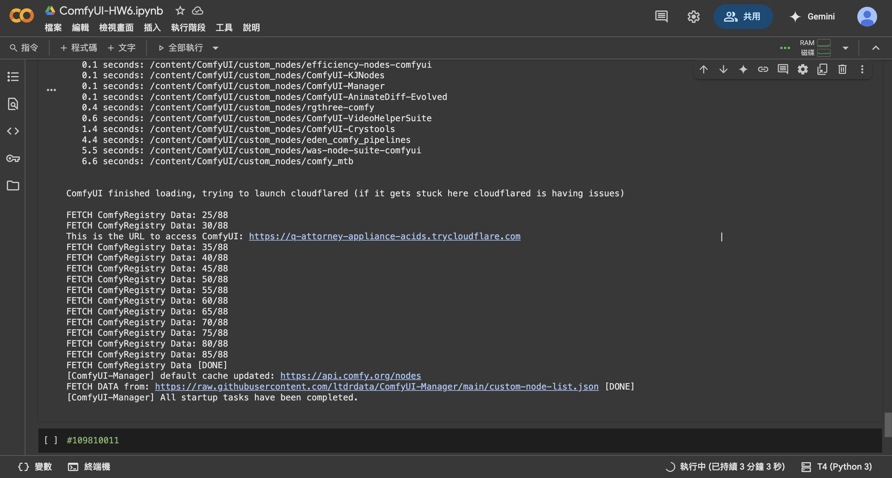
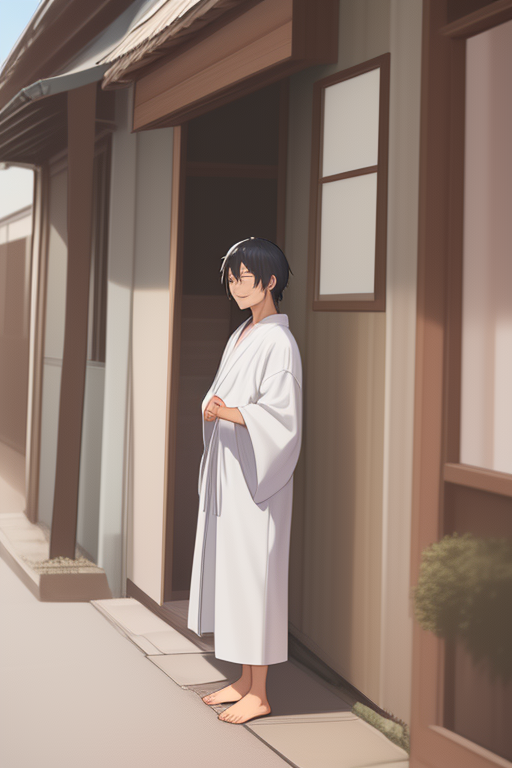

| 總分 | 完成後打勾 | 配分 | 分項描述 |
|---|---|---|---|
| 4 | Simple baseline - Simple baseline - Comfy UI 環境設定完成 | ||
| 4 | Medium baseline - Medium baseline - 生成角色的圖片 | ||
| 2 | Strong baseline - Strong baseline - 生成完整角色動畫 | ||
| -10 | 沒有寫100字心得 |


使用提示詞: { "0": "(solo), 1boy, relaxed, loose japanese clothes, petting dog, medium hair, gentle smile, street, morning, soft light", "10": "1boy, loose yukata, petting dog's head, short hair, happy expression, dog wagging tail, street, morning, soft shadows", "20": "(solo), 1boy, traditional japanese outfit, gently touching dog's head, medium-length hair, smiling eyes, dog sitting, sunlight", "30": "1boy, traditional robes, crouching, hand on dog's head, short black hair, content face, dog looking up, sunny day, quiet street", "40": "1boy, loose kimono, petting dog, hand motion blur, bangs, soft expression, dog tail wagging, trees in background, bright day", "50": "(solo), 1boy, flowing clothes, petting fluffy dog, bangs moving in breeze, smiling gently, dog licking hand, nature background", "60": "1boy, relaxed kimono, crouched down, patting dog's head, dog happy, green plants nearby, warm atmosphere", "70": "(solo), 1boy, simple japanese clothes, hand on dog, soft face, traditional street background, dog sitting quietly", "80": "1boy, petting dog softly, loose clothes swaying, gentle look, trees and fence in background, soft sun", "90": "1boy, petting dog, loose yukata, wind movement in clothes, dog yawning, natural background, slightly cloudy sky", "100": "(solo), 1boy, traditional clothes, hand still on dog's head, eyes closed smiling, peaceful moment, calm morning light", "110": "1boy, petting dog's head, loose kimono outfit, both eyes closed, dog rubbing against hand, quiet street, harmony" }